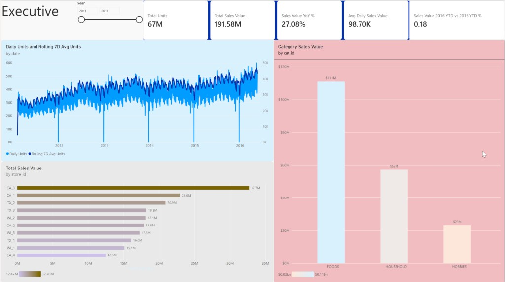

Total Units
66.9M
Dashboard 67M · exact 66,927,173
Part A lists all 33 Power BI DAX measures in full.
Part B validates Dashboard 1 (Executive) against
data/gold_export/.
Published report walmart_visualization — Executive, Store, Product, and Demand pages on Gold aggregates. Open in Power BI ↗
Analysis pages: 08 Executive · 09 Store · 10 Product · 11 Demand · Overview
_Measures)
Complete catalogue of 33 Power BI measures used across
all dashboard pages. Create each with
right-click _Measures → New measure, then paste.
Format currency / percentage measures in the ribbon after creating them.
/* 1 */
Total Units =
SUM ( 'agg_daily_store_sales'[units_sold] )
/* 2 — format Currency $ */
Total Sales Value =
SUM ( 'agg_daily_store_sales'[sales_value] )
/* 3 — format Currency $ */
Avg Sell Price =
AVERAGE ( 'agg_daily_store_sales'[avg_sell_price] )
/* 4 */
Active SKUs (Store Day) =
SUM ( 'agg_daily_store_sales'[active_skus] )
/* 5 — format Currency $ */
Avg Daily Sales Value =
AVERAGEX (
VALUES ( 'dim_date'[date] ),
[Total Sales Value]
)
/* 6 */ Category Units = SUM ( 'agg_daily_category_sales'[units_sold] ) /* 7 — format Currency $ */ Category Sales Value = SUM ( 'agg_daily_category_sales'[sales_value] ) /* 8 */ Category Active Stores = SUM ( 'agg_daily_category_sales'[active_stores] )
/* 9 */
Product Units =
SUM ( 'agg_product_performance'[units_sold] )
/* 10 — format Currency $ */
Product Sales Value =
SUM ( 'agg_product_performance'[sales_value] )
/* 11 */
Product Avg Daily Units =
AVERAGE ( 'agg_product_performance'[avg_daily_units] )
/* 12 */
Product Demand Volatility =
AVERAGE ( 'agg_product_performance'[demand_volatility] )
/* 13 — format Currency $ */
Product Avg Price =
AVERAGE ( 'agg_product_performance'[avg_sell_price] )
/* 14 */
Stores Selling =
SUM ( 'agg_product_performance'[stores_selling] )
/* 15 */
Product Units Rank =
RANKX (
ALLSELECTED ( 'agg_product_performance'[item_id] ),
[Product Units],
,
DESC,
DENSE
)
/* 16 */ Daily Units = SUM ( 'agg_demand_trends'[daily_units] ) /* 17 — format Currency $ */ Daily Sales Value (Demand) = SUM ( 'agg_demand_trends'[daily_sales_value] ) /* 18 */ Rolling 7D Units = SUM ( 'agg_demand_trends'[rolling_7d_units] ) /* 19 */ Rolling 28D Units = SUM ( 'agg_demand_trends'[rolling_28d_units] ) /* 20 */ Rolling 7D Avg Units = AVERAGE ( 'agg_demand_trends'[rolling_7d_avg_units] ) /* 21 */ Active SKUs (Demand) = SUM ( 'agg_demand_trends'[active_skus] ) /* 22 */ Active Stores (Demand) = SUM ( 'agg_demand_trends'[active_stores] )
/* 23 */ Event Units = SUM ( 'agg_event_sales'[units_sold] ) /* 24 — format Currency $ */ Event Sales Value = SUM ( 'agg_event_sales'[sales_value] ) /* 25 — format Percentage */ Category Share = AVERAGE ( 'agg_store_category_sales'[category_sales_share] ) /* 26 — format Currency $ */ Price Avg = AVERAGE ( 'agg_price_analysis'[avg_sell_price] ) /* 27 — format Currency $ */ Price Median = AVERAGE ( 'agg_price_analysis'[median_sell_price] )
Requires dim_date[date] marked as the date table.
/* 28 — format Currency $ */
Sales Value Previous Year =
CALCULATE (
[Total Sales Value],
SAMEPERIODLASTYEAR ( 'dim_date'[date] )
)
/* 29 — format Percentage */
Sales Value YoY % =
VAR Curr = [Total Sales Value]
VAR Prev = [Sales Value Previous Year]
RETURN
IF (
Prev = 0 || ISBLANK ( Prev ),
BLANK (),
DIVIDE ( Curr - Prev, Prev )
)
/* 30 */
Units Previous Year =
CALCULATE (
[Total Units],
SAMEPERIODLASTYEAR ( 'dim_date'[date] )
)
/* 31 — format Percentage */
Units YoY % =
VAR Curr = [Total Units]
VAR Prev = [Units Previous Year]
RETURN
IF (
Prev = 0 || ISBLANK ( Prev ),
BLANK (),
DIVIDE ( Curr - Prev, Prev )
)
/* 32 — format Currency $ */
Sales Value MTD =
TOTALMTD ( [Total Sales Value], 'dim_date'[date] )
/* 33 — format Currency $ */
Sales Value YTD =
TOTALYTD ( [Total Sales Value], 'dim_date'[date] )
| # | Measure | Group | Used on Executive? |
|---|---|---|---|
| 1 | Total Units | Core | Yes — card |
| 2 | Total Sales Value | Core | Yes — card, store bar |
| 3 | Avg Sell Price | Core | No (Store page) |
| 4 | Active SKUs (Store Day) | Core | No |
| 5 | Avg Daily Sales Value | Core | Yes — card |
| 6 | Category Units | Category | No |
| 7 | Category Sales Value | Category | Yes — category column |
| 8 | Category Active Stores | Category | No |
| 9–15 | Product * | Product | No (Product page) |
| 16 | Daily Units | Demand | Yes — demand line |
| 17 | Daily Sales Value (Demand) | Demand | No (Demand page) |
| 18 | Rolling 7D Units | Demand | Yes — demand line |
| 19–22 | Rolling / Active * | Demand | No (Demand page) |
| 23–27 | Event / Price * | Event / price | No (Store / Demand / Product) |
| 28–29 | Sales Value Previous Year / YoY % | Time intel | Yes — YoY card |
| 30–33 | Units YoY / MTD / YTD | Time intel | Optional |
Independent check of the Power BI Executive page against
data/gold_export/. Numbers recomputed with
scripts/analyze_executive_dashboard.py.
Power BI page Executive after UI fixes: sales card 191.58M, daily demand + rolling 7D, five KPI cards including 2016 YTD vs 2015 YTD ≈ 18%, years 2011–2016 selected.

Source tables: agg_daily_store_sales,
agg_daily_category_sales, agg_demand_trends,
dim_date. Facts were not required — Executive visuals are
built from Gold aggregates (same design as the Power BI Import model).
| Dashboard visual | Gold source | Validation result |
|---|---|---|
| Total Units / Sales / Avg Daily cards | agg_daily_store_sales |
Exact match |
| Sales Value YoY % | Store sales + dim_date LY shift |
~27–28% (SAMEPERIODLASTYEAR behaviour) |
| Demand line (by date) | agg_demand_trends |
Day grain fixed — daily + rolling 7D visible |
| Sales by store | agg_daily_store_sales |
CA_3 → CA_4 order matches |
| Sales by category | agg_daily_category_sales |
FOODS $111M · HOUSEHOLD $57M · HOBBIES $23M |
The Executive page is designed as a single-screen overview: KPI strip →
demand trend → store and category breakdown. Interaction is driven by
the year slicer, visual highlighting, and the star-schema filter path
(dim_date / dim_store → aggregates → measures).
┌─────────────────────────────────────────────────────────────┐ │ [ Year slicer ] │ │ [ Total Units ] [ Sales $ ] [ YoY % ] [ Avg Daily Sales ] │ │ [──────── Demand line: daily vs rolling 7D (wide) ───────] │ │ [ Store ranking bar (left) ] [ Category columns (right) ] │ └─────────────────────────────────────────────────────────────┘
| Zone | Purpose | Why this visual |
|---|---|---|
| Top — slicer | Time context for the whole page | Year is the natural planning grain for executives |
| KPI cards | Answer “how big / how growing?” in one glance | Cards minimise cognitive load; 4 measures max |
| Wide line chart | Show demand trajectory and smoothing | Line encodes time; dual series contrasts noise vs trend |
| Store bar | Rank outlets by revenue | Horizontal bar is best for long category labels (store_id) |
| Category column | Show mix (FOODS / HOUSEHOLD / HOBBIES) | Few categories → clustered column reads clearly |
| Visual | Type | Fields / measures | Interaction notes |
|---|---|---|---|
| Year | Slicer | dim_date[year] |
Primary filter; sync to other pages via Sync slicers |
| Total Units | Card | [Total Units] |
Responds to year (and cross-highlight from other visuals) |
| Total Sales Value | Card | [Total Sales Value] |
Format as Currency; avoid raw long decimals |
| Sales Value YoY % | Card | [Sales Value YoY %] |
Needs date table; blank if no prior-year overlap |
| Avg Daily Sales Value | Card | [Avg Daily Sales Value] |
More robust than annual totals for partial years |
| Demand trend | Line | X agg_demand_trends[date]; Y [Daily Units], [Rolling 7D Units] (or columns) |
Use continuous date, not Year hierarchy, for daily grain |
| Sales by store | Clustered bar | Y dim_store[store_id]; X [Total Sales Value] |
Sort descending; click a store to highlight / filter other visuals |
| Sales by category | Clustered column | X agg_daily_category_sales[cat_id]; Y [Category Sales Value] |
Click FOODS / HOUSEHOLD / HOBBIES to filter store + cards |
| Interaction | How it works on Executive | User value |
|---|---|---|
| Year slicer filter |
Selecting one or more years filters all visuals that depend on
dim_date (cards, demand line, store/category charts via
related date keys on aggs).
|
Compare a single year or multi-year window without rebuilding the page |
| Cross-filtering / highlight |
Clicking a store bar or category column filters other visuals
(default Power BI edit interactions: Filter). Example: click
CA_3 → cards and category chart recompute for that store
where relationships allow.
|
Drill from overview → outlet or category without leaving the page |
| Edit interactions | Format → Edit interactions: set whether a visual Filters, Highlights, or None on peers. Recommended: slicer → Filter all; category/store → Filter cards + peer chart; keep demand line as Filter from year only if category grain does not map cleanly. | Prevent confusing blank charts when grains do not align |
| Sync slicers |
View → Sync slicers: sync year to Store / Product / Demand
pages so the same time window follows the analyst across the report.
|
Consistent storytelling across the four-page workbook |
| Tooltips |
Default tooltips show series name + value on hover. Optional:
add state_id or avg_sell_price as tooltip
fields on the store bar.
|
Extra context without cluttering the canvas |
| Drill on date axis |
If X-axis uses Date Hierarchy, users can drill Year → Quarter →
Month → Day. Prefer plain date for demand so daily
seasonality (weekends, Christmas) stays visible.
|
Avoid accidental year roll-ups that hide calendar effects |
| Sort & legend | Store bar sorted by sales descending; demand legend distinguishes daily vs rolling 7D. | Ranking and trend comparison without extra clicks |
*:1) from
aggregates to dimensions, cross-filter direction Single
(dimension filters fact/agg — not the reverse by default).
dim_date is marked as the date table so
SAMEPERIODLASTYEAR / YoY cards respond correctly when the
year slicer changes.
_Measures recalculate in the current filter
context — cards are not static numbers; they are interactive KPIs.
CA_3) → see how category mix and KPIs shift.FOODS → see store ranking under that category.date (not Date Hierarchy), so
daily seasonality stays visible.
Training sales run 2011-01-29 → 2016-05-22. 2011 has 337 days; 2016 has only 143 days (through 22 May). Full calendar years are 2012–2015 only.
| Year | Days | Total units | Avg daily units | Sales value |
|---|---|---|---|---|
| 2011 | 337 | 8.86M | 26,281 | $23.89M |
| 2012 | 366 | 12.06M | 32,956 | $32.65M |
| 2013 | 365 | 13.14M | 35,988 | $35.92M |
| 2014 | 365 | 13.09M | 35,862 | $37.86M |
| 2015 | 365 | 13.80M | 37,810 | $42.42M |
| 2016 | 143 | 5.98M | 41,835 | $18.84M |
Finding: Before the fix, a year-grain demand chart made 2016 look like a collapse. With the updated daily line, demand clearly trends upward and 2016 remains strong on a per-day basis (~41.8K avg daily units vs ~37.8K in 2015). Annual KPI totals can still look low for 2016 when all years are selected — that is partial-year coverage (143 days), not a demand crash. Prefer average daily metrics or same-calendar-window YoY (Jan–22 May 2016 vs Jan–22 May 2015: sales +18.0%).
On full years 2012→2015, sales CAGR is about 9.1%.
Year-over-year sales: 2013 +10.0%, 2014 +5.4%, 2015 +12.0%.
Units grew more slowly than sales in later years (price / mix effects).
The dashboard YoY card (~27%) reflects a DAX
SAMEPERIODLASTYEAR over the full selected range (including
asymmetric year edges), not a clean full-year 2015 vs 2014 compare.
Ten M5 stores across CA / TX / WI. Ranking by sales value matches the dashboard bar chart exactly:
| Rank | Store | Sales | Share of total |
|---|---|---|---|
| 1 | CA_3 | $32.70M | 17.1% |
| 2 | CA_1 | $22.95M | 12.0% |
| 3 | TX_2 | $20.89M | 10.9% |
| … | … | … | … |
| 10 | CA_4 | $12.47M | 6.5% |
Finding: CA_3 sells ~2.6× CA_4. Top 3 stores ≈ 40% of sales. State mix: CA 44.9% · TX 28.8% · WI 26.4%. California is both the largest region and the home of the best and worst stores — store-level ops matter more than state label alone.
FOODS $111.1M (58.0%), HOUSEHOLD $57.1M (29.8%), HOBBIES $23.3M (12.2%). FOODS share drifts down slightly across full years (≈60% in 2011–12 → ≈55% in 2015) as HOUSEHOLD/HOBBIES grow, but FOODS remains the primary revenue engine and the natural focus for demand-planning accuracy.
date
(daily units + rolling 7D avg). Seasonality and Christmas dips visible.
Sales Value 2016 YTD vs 2015 YTD % shows
0.18 (18%) for Jan 1–May 22 vs same window prior year.
Keep the all-years Sales Value YoY % (27.08%) only as a
SAMEPERIODLASTYEAR illustration — prefer the YTD card for the growth story.
Optional polish: format the YTD card as Percentage with 1–2 decimals so it displays 18.0% instead of 0.18.
For this Walmart M5 platform project, a complete analysis write-up (course / portfolio / stakeholder pack) should cover the sections below — not only dashboard screenshots.
| Section | What to deliver | This project status |
|---|---|---|
| 1. Problem & objective | Business question (demand visibility, store/category performance), success criteria | FMCG demand platform on M5 — defined |
| 2. Data understanding | Sources, grain, time span, entities (item/store/day), known gaps | Reports 01–02; partial 2011/2016 documented here |
| 3. Pipeline / methodology | Ingestion → Medallion → orchestration; reproducible transforms | Reports 02–07 complete |
| 4. Data quality | Row counts, nulls, price coverage, referential integrity, outliers (Christmas) | Gold 79.2% priced facts; calendar zeros noted |
| 5. Exploratory analysis (EDA) | Trends, seasonality, concentration, category mix — with numbers | This page (Executive) + gold_export script |
| 6. Visualization & interaction | Layout hierarchy, chart choices, slicers, cross-filter, sync, click-paths | Section 2 of this report |
| 7. BI / dashboard design | Model relationships, DAX definitions, page layout, limitations | powerbi/documentation/ |
| 8. Findings & recommendations | Actionable insights (store focus, FOODS priority, YoY caveats) | Section 2 above |
| 9. Limitations & next work | No causal promo model yet; forecast horizon; more DQ tests | Pages 2–4 Store/Product/Demand still to analyse formally |
| 10. Appendix | Table schemas, DAX list, job IDs, how to refresh | Existing docs + Gold export path |
python scripts/analyze_executive_dashboard.py
after each Gold refresh to confirm the dashboard still matches export.
python scripts/analyze_executive_dashboard.py
Inputs: data/gold_export/agg_*.parquet,
dim_date.parquet.
Dashboard screenshot:
assets/executive-dashboard-page1.png
(Figure 1 above). Power BI page Executive
with years 2011–2016 selected.
{kind=link}